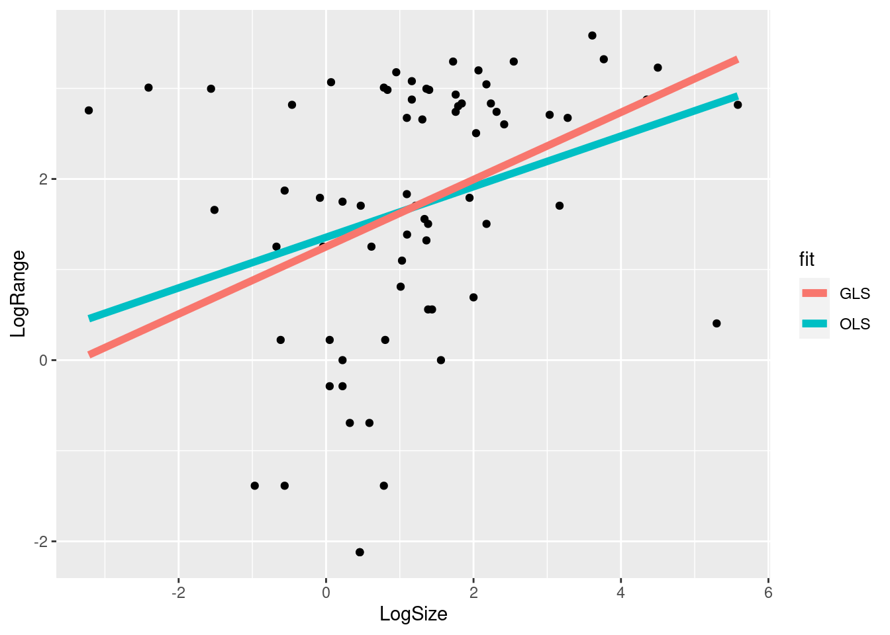

8 Generalised Least Squares
In OLS, the assumption about the errors is that they are independent and identically distributed. What if they are not independent? One common example is that the errors are correlated with each other. Then we have: \[ \epsilon \sim N(0, \sigma^2 \mathbf{\Sigma}) \] where \(\Sigma\) is a variance-covariance matrix for the residuals. ie
\[ \mathbf{\Sigma} = \begin{bmatrix} \sigma^2_1 & Cov(\epsilon_1, \epsilon_2) & \cdots & Cov(\epsilon_1, \epsilon_n) \\ Cov(\epsilon_2, \epsilon_1) & \sigma^2_2 & \cdots & Cov(\epsilon_2, \epsilon_n) \\ \vdots & \vdots & \ddots & \vdots \\ Cov(\epsilon_n, \epsilon_1) & \cdots & \cdots & \sigma^2_n \end{bmatrix} \]
8.1 Estimation: GLS
Then we have the GLS Estimator: \[ \hat{\beta_{GLS}} = (\mathbf{X^T \Sigma^{-1} X})^{-1}\mathbf{X^T\Sigma^{-1}Y} \]
- If the covariances (off-diagonals) are zero, then we have weighted least squares
- We can transform the GLS problem into OLS by multiplying \(\mathbf{X}\) and \(\mathbf{Y}\) by \(\mathbf{\Sigma}^{-1/2}\) Then we can use the OLS equation on these new, transformed data. ie, \(\mathbf{X^*} = \mathbf{\Sigma^{-1/2}X}\), \(\mathbf{Y^*} = \mathbf{\Sigma^{-1/2}Y}\). \(\hat{\beta_{GLS}} = \mathbf{(X^{*T}X^*)^{-1}X^*Y^*}\)
8.2 GLS example: Phylogenetic autocorrelation
library(ape)
library(ade4)
library(ggtree)
data(carni70)
tr <- read.tree(text=carni70$tre)
LogRange <- log(carni70$tab$range)
LogSize <- log(carni70$tab$size)
dat <- data.frame(LogRange=LogRange, LogSize=LogSize, Species=gsub("_", ".", rownames(carni70$tab)))
ggplot(aes(x=LogSize, y=LogRange), data=dat)+geom_point()ggtree(tr) + geom_tiplab()
8.3 GLS example: Phylogenetic autocorrelation
library(nlme)
fit.lm <- lm(LogRange ~ LogSize, data=dat)
fit.gls <- gls(LogRange ~ LogSize, correlation=corBrownian(phy=tr, form=~Species), data=dat)
summary(fit.lm)##
## Call:
## lm(formula = LogRange ~ LogSize, data = dat)
##
## Residuals:
## Min 1Q Median 3Q Max
## -3.6043 -0.9277 0.3178 1.0636 2.3245
##
## Coefficients:
## Estimate Std. Error t value Pr(>|t|)
## (Intercept) 1.3562 0.2123 6.389 1.76e-08 ***
## LogSize 0.2793 0.1070 2.611 0.0111 *
## ---
## Signif. codes: 0 '***' 0.001 '**' 0.01 '*' 0.05 '.' 0.1 ' ' 1
##
## Residual standard error: 1.415 on 68 degrees of freedom
## Multiple R-squared: 0.09112, Adjusted R-squared: 0.07776
## F-statistic: 6.818 on 1 and 68 DF, p-value: 0.0111summary(fit.gls)## Generalized least squares fit by REML
## Model: LogRange ~ LogSize
## Data: dat
## AIC BIC logLik
## 294.6851 301.3436 -144.3425
##
## Correlation Structure: corBrownian
## Formula: ~Species
## Parameter estimate(s):
## numeric(0)
##
## Coefficients:
## Value Std.Error t-value p-value
## (Intercept) 1.2515297 2.6279314 0.4762414 0.6354
## LogSize 0.3710265 0.1950539 1.9021745 0.0614
##
## Correlation:
## (Intr)
## LogSize -0.16
##
## Standardized residuals:
## Min Q1 Med Q3 Max
## -0.7127592 -0.1633996 0.0533231 0.1993733 0.5433174
##
## Residual standard error: 4.968733
## Degrees of freedom: 70 total; 68 residualpredictvals <- function(model, xvar, yvar, xrange=NULL, samples=100,...){
if(is.null(xrange)){
if(class(model) %in% c('lm','glm')){
xrange= range(model$model[[xvar]])
}
else if(class(model) %in% c('loess')){
xrange = range(model$x)
}
}
newdata = data.frame(x = seq(xrange[1], xrange[2], length.out = samples))
names(newdata) = xvar
newdata[[yvar]] = predict(model, newdata=newdata, ...)
newdata
}
dat <- data.frame(LogRange = LogRange, LogSize = LogSize)
## Use the predictvals function from "R Graphics Cookbook"
ols_predicted <- predictvals(fit.lm, "LogSize", "LogRange")
ols_predicted$fit <- "OLS"
gls_predicted <- predictvals(fit.gls, "LogSize", "LogRange",
xrange = range(dat$LogSize))
gls_predicted$fit <- "GLS"
ggplot(aes(x = LogSize, y = LogRange), data = dat)+ geom_point() +
geom_line(aes(x = LogSize, y = LogRange, col = fit), data = ols_predicted, linewidth = 2) +
geom_line(aes(x = LogSize, y = LogRange, col = fit), data = gls_predicted, linewidth = 2)
plot(fit.gls)qqnorm(fit.gls, form = ~resid(., type = "n"), abline = c(0, 1))8.4 GLS example: Time Series
- We expect that adjacent values may be more similar than values further away in time. That is, the effect of the
disturbanceon the time series decays with time. - In general we do not know the covariances of each value with all other values.
- Instead, we can
modelthe time series effects using a smaller number of parameters. - A simple example is the
autoregressionmodel: - \(x_t=\phi_1x_{t-1}+ \phi_2x_{t-2} + \dots + \phi_px_{t-p}+\epsilon\)
8.5 Lynx Data
data(lynx)
str(lynx)## Time-Series [1:114] from 1821 to 1934: 269 321 585 871 1475 ...lynxdat <- data.frame(Year=1821:1934, Lynx=lynx)
ggplot(lynxdat, aes(x=Year, y=Lynx)) + geom_line()+geom_point() + scale_x_continuous() + scale_y_continuous() +
ggtitle("Hudson Bay Lynx Returns")+theme(plot.title = element_text(hjust = 0.5))8.6 ACF and PACF
library(forecast)## Registered S3 method overwritten by 'quantmod':
## method from
## as.zoo.data.frame zoo##
## Attaching package: 'forecast'## The following object is masked from 'package:nlme':
##
## getResponseprint(ggAcf(lynx))print(ggPacf(lynx))8.7 Autoregression of Lynx Data
# find optimal autoregression size
ar(lynx, method="mle")##
## Call:
## ar(x = lynx, method = "mle")
##
## Coefficients:
## 1 2 3 4 5 6 7 8
## 1.0555 -0.6298 0.2105 -0.1438 -0.0200 0.0373 -0.2341 0.3322
##
## Order selected 8 sigma^2 estimated as 6169978.8 GLS Autoregression model of Lynx data
fit <- gls(Lynx~Year, correlation=corARMA(p=8), data=lynxdat, method="ML")
fit## Generalized least squares fit by maximum likelihood
## Model: Lynx ~ Year
## Data: lynxdat
## Log-likelihood: -923.1686
##
## Coefficients:
## (Intercept) Year
## -1535.301943 1.657011
##
## Correlation Structure: ARMA(8,0)
## Formula: ~1
## Parameter estimate(s):
## Phi1 Phi2 Phi3 Phi4 Phi5 Phi6 Phi7 Phi8
## 1.05436014 -0.62987055 0.20987093 -0.14453853 -0.01997304 0.03578814 -0.23275963 0.32892377
## Degrees of freedom: 114 total; 112 residual
## Residual standard error: 1558.429vals <- resid(fit, type="n")
print(ggAcf(vals))print(ggPacf(vals))